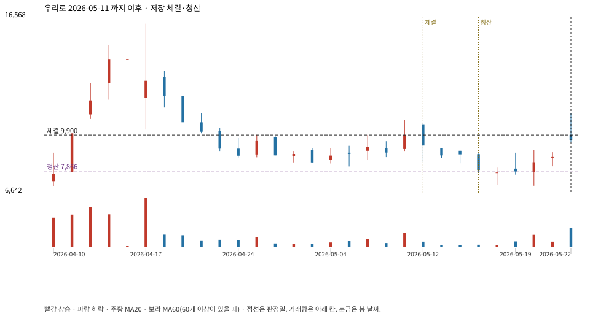

계좌를 다시 돌리지 않았다. 아래는 저장된 주문·체결·청산·비용·손익이다.

{
"case_id": "bfa2bb7006b03629",
"status": "closed",
"trade": {
"symbol": "046970.KQ",
"signal_date": "2026-05-11",
"quantity": 582,
"entry": 9900,
"stop": 7870,
"target": 16200,
"planned_risk": 1194090.0198299997,
"reserved_cash": 5767561.8,
"fill": {
"date": "2026-05-12",
"price": 9900,
"fee": 5761.8
},
"exit": {
"date": "2026-05-15",
"price": 7866.065,
"reason": "stop",
"net_pnl": -1194090.0198299997,
"ambiguous_bar": false
}
},
"cost": "research fee 10bp each side, slippage 5bp; amounts below are the stored ledger, not a new run",
"chart": "c\/bfa2bb7006b03629.svg"
}